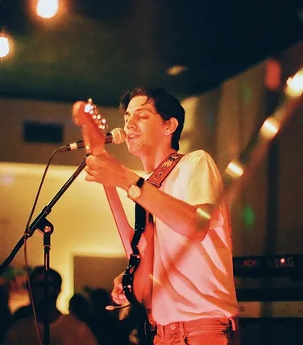
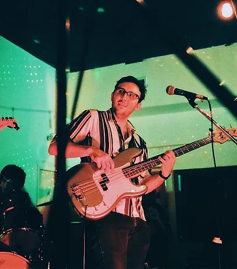
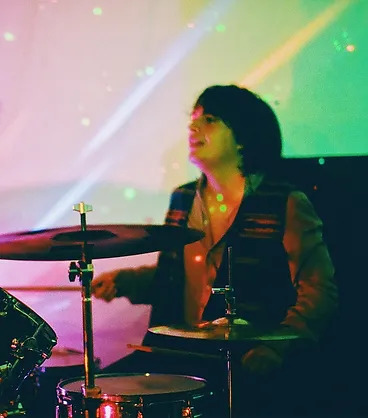

Members
The band consists of Marco Rivero Ochoa on lead vocals and rhythm guitar, Gabriel Marinuchi (or "Nuchi") on lead guitar, Augusto "Tuto" Di Catarina on bass, Leo Cattani on keyboard, and Adam Perez on drums, who replaced former drummer and producer Armando Baeza after the band's first album.

Marco Rivero Ochoa

Gabriel Marinuchi

Augusto Di Catarina
Leo Cattani
